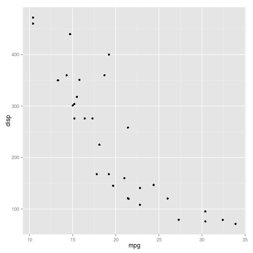
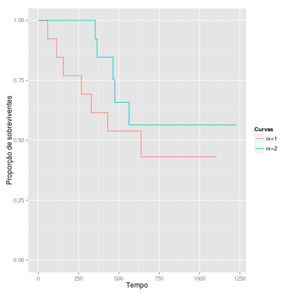
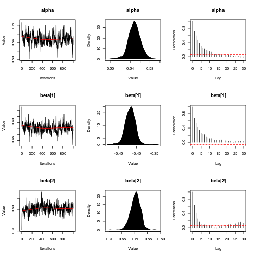
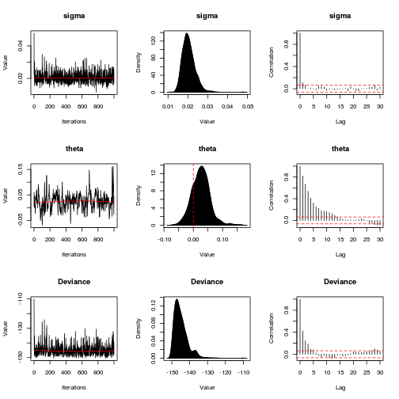
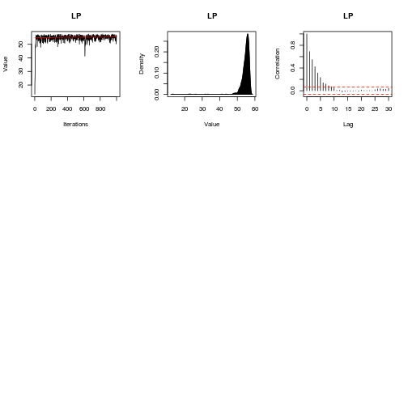
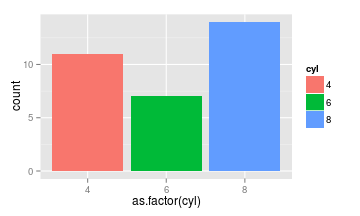
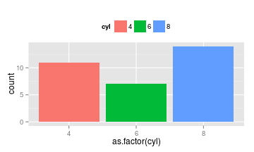
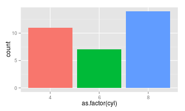
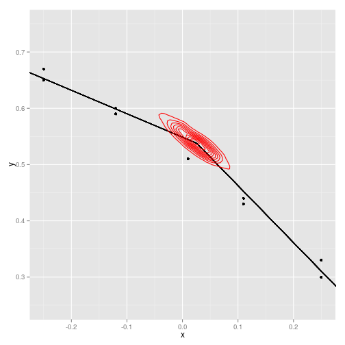

-
Aula 08 - Aula dos alunos
2015-02-04
SourceParte 1: Um pouco mais de modelos
Modelos de sobrevivência
A Análise de Sobrevivência compreende os estudos em que o interesse principal é avaliar o tempo até a ocorrência de um evento pré-determinado. Esses tempos, chamados de tempos de falha, podem, então, ser explicados por outras variáveis a partir de modelos de regressão paramétricos ou semi-paramétricos. Uma característica fundamental desse tipo de estudo é a presença de censura, definida como a observação parcial do tempo de falha.
Para ilustrar as funções discutidas aqui, utilizaremos o banco de dados
ovarian, do pacotesurvival. Este banco traz o tempo de sobrevivência (ou censura) de 26 mulheres com câncer de ovário e o objetivo do estudo foi comparar dois tratamentos distintos para essa doença.Nesse exemplo, o tempo de falha é o intervalo entre a entrada no estudo e a ocorrência do evento de interesse que, aqui, é a morte da paciente. A censura neste caso é causada pelo abandono do estudo ou pela não ocorrência do evento até o fim do acompanhamento, ou seja, os casos em que a paciente estava viva no fim do estudo.
Para mais informações sobre o banco de dados, consulte o
help(ovarian).Para mais informações sobre Análise de Sobrevivência, consultar as seguintes referências:
Colosimo, E.A. e Giolo, S.R.. (2005) Análise de Sobrevivência Aplicada. ABE --- Projeto fisher. Editora Edgard Blucher
Kalbfleisch, J. D.; Prentice, Ross L. (2002). The statistical analysis of failure time data. New York: John Wiley & Sons.
Lawless, Jerald F. (2003). Statistical Models and Methods for Lifetime Data (2nd ed.). Hoboken: John Wiley and Sons.
Kaplan-Meier e Log-rank
O Kaplan-Meier é a principal ferramenta para visualizar dados de sobrevivência. Esses gráficos ajustam curvas tipo-escada da proporção de indivíduos em risco --- que ainda não falharam e não foram censurados --- ao longo do tempo. Para plotar um Kaplan-Meier no R, utilizamos a função
survfit()e a funçãoplot().fit <- survfit(Surv(futime, fustat) ~ rx, data = ovarian) plot(fit)
Também podemos construir um Kaplan-Meier com o
ggplot2, mas observe que é necessário fazer algums modificações no objetofit:m <- length(fit$strata) df <- data.frame(time = c(rep(0, m), fit$time), surv = c(rep(1, m), fit$surv), group = c(names(fit$strata), rep(names(fit$strata), fit$strata))) ggplot(data = df) + geom_step(aes(x = time, y = surv, colour = as.factor(group))) + ylim(0, 1) + labs(colour = "Curvas", y = "Proporção de sobreviventes", x = "Tempo")
O teste de log-rank para comparação de grupos é realizado pela função
survdiff():survdiff(Surv(futime, fustat) ~ rx, data = ovarian)## Call: ## survdiff(formula = Surv(futime, fustat) ~ rx, data = ovarian) ## ## N Observed Expected (O-E)^2/E (O-E)^2/V ## rx=1 13 7 5.23 0.596 1.06 ## rx=2 13 5 6.77 0.461 1.06 ## ## Chisq= 1.1 on 1 degrees of freedom, p= 0.303Modelos paramétricos
Para ajustar modelos paramétricos, podemos utilizar a função
survreg().fit <- survreg(Surv(futime, fustat) ~ rx + age, data = ovarian, dist = "exponential") summary(fit)## ## Call: ## survreg(formula = Surv(futime, fustat) ~ rx + age, data = ovarian, ## dist = "exponential") ## Value Std. Error z p ## (Intercept) 12.123 2.3966 5.06 4.23e-07 ## rx 0.661 0.6159 1.07 2.83e-01 ## age -0.105 0.0319 -3.30 9.81e-04 ## ## Scale fixed at 1 ## ## Exponential distribution ## Loglik(model)= -91.2 Loglik(intercept only)= -98 ## Chisq= 13.65 on 2 degrees of freedom, p= 0.0011 ## Number of Newton-Raphson Iterations: 5 ## n= 26Observe que no exemplo acima utilizamos a distribuição Exponencial. O argumento
dist =pode ser modificado para ajustarmos modelos com outras distribuições:dist = "weibull"--- distribuição Weibull (default)dist = "gaussian"--- distribuição Normaldist = "logistic"--- distribuição Logísticadist = "lognormal"--- distribuição Log-normaldist = "loglogistic"--- distribuição Log-logística
Modelo semi-paramétrico de Cox
No R, a função mais utilizada para ajustar modelos de Cox é a
coxph().fit <- coxph(Surv(futime, fustat) ~ age + rx, data = ovarian) summary(fit)## Call: ## coxph(formula = Surv(futime, fustat) ~ age + rx, data = ovarian) ## ## n= 26, number of events= 12 ## ## coef exp(coef) se(coef) z Pr(>|z|) ## age 0.14733 1.15873 0.04615 3.193 0.00141 ** ## rx -0.80397 0.44755 0.63205 -1.272 0.20337 ## --- ## Signif. codes: 0 '***' 0.001 '**' 0.01 '*' 0.05 '.' 0.1 ' ' 1 ## ## exp(coef) exp(-coef) lower .95 upper .95 ## age 1.1587 0.863 1.0585 1.268 ## rx 0.4475 2.234 0.1297 1.545 ## ## Concordance= 0.798 (se = 0.091 ) ## Rsquare= 0.457 (max possible= 0.932 ) ## Likelihood ratio test= 15.89 on 2 df, p=0.0003551 ## Wald test = 13.47 on 2 df, p=0.00119 ## Score (logrank) test = 18.56 on 2 df, p=9.341e-05Generalized Additive Model (GAM)
Os modelos aditivos generalizados ou GAM são modelos baseados na teoria desenvolvida por Trevor Hastie e Robert Tibshirani, e podem ser vistos como uma generalização de GLM, no sentido de que todos os GLM sãoo casos particulares de GAM.
Na regressão normal e em GLM assumimos, em geral, que as variáveis aleatórias correspondentes aos indivíduos são independentes, e que existe uma função, denominada função de ligação, que une as médias destas variáveis aleatórias a um certo preditor linear.
A grande mudança nos modelos aditivos generalizados está na forma do preditor. Para cada variável explicativa, temos associada uma função a ser estimada (ou suavizada), sendo que o preditor fica definido como a soma dessas funções
\[ g(\mu_i) = f_0 + \sum f(x_{ij}) \]
Para evitar o desconforto da interpretação das contribuições marginais (funções), uma alternativa é utilizar as funções de suavização para ajustar variáveis de controle em que não há interesse direto, e manter a parte principal com termos paramétricos. Geralmente isso facilita a interpretação e melhora o ajuste do modelo em relação ao GLM.
Pacote mgcv
O pacote
mgcvé um dos pacotes mais completos do R e permite simulação, ajuste, visualização e análise de resíduos paragam. O pacote gerou até um livro.Na prática, a utilização do GAM não difere muito de modelos GLM. Uma das únicas diferenças na especificação do modelo é que podemos utilizar a função
spara determinar quais termos queremos que sejam ajustados com funções aditivas.Exemplo: PNUD
data(pnud_muni, package='abjutils') library(mgcv) fit_model <- gam(espvida ~ ano + s(rdpc) + s(i_escolaridade), data=pnud_muni, family=Gamma) summary(fit_model)## ## Family: Gamma ## Link function: inverse ## ## Formula: ## espvida ~ ano + s(rdpc) + s(i_escolaridade) ## <environment: 0xcd88d10> ## ## Parametric coefficients: ## Estimate Std. Error t value Pr(>|t|) ## (Intercept) 1.234e-01 1.544e-03 79.92 <2e-16 *** ## ano -5.435e-05 7.719e-07 -70.41 <2e-16 *** ## --- ## Signif. codes: 0 '***' 0.001 '**' 0.01 '*' 0.05 '.' 0.1 ' ' 1 ## ## Approximate significance of smooth terms: ## edf Ref.df F p-value ## s(rdpc) 8.857 8.993 1202.66 <2e-16 *** ## s(i_escolaridade) 5.644 6.786 22.31 <2e-16 *** ## --- ## Signif. codes: 0 '***' 0.001 '**' 0.01 '*' 0.05 '.' 0.1 ' ' 1 ## ## R-sq.(adj) = 0.831 Deviance explained = 81.9% ## GCV = 0.0011932 Scale est. = 0.0011843 n = 16695par(mfrow=c(1, 2)) plot(fit_model, scheme=1)
Pacote gamlss
Se por algum motivo existir algum problema na análise em relação à distribuição, heterocedasticidade, e utilização de preditores lineares, uma possível alternativa é o GAMLSS.
GAMLSS significa Generalized Additive Models for Location, Scale and Shape. Com GAMLSS é possível modelar não só a média da distribuição \(\mu_i\) (primeiro momento), mas também a variância \(\sigma_i\) (segundo momento), a assimetria \(\phi_i\) (terceiro momento) e a curtose \(\rho_i\) (quarto momento), usando preditores.
Por ser um modelo aditivo, o GAMLSS permite que sejam adicionados termos de suavização na fórmula do modelo, o que o torna uma generalização natural do GAM (em relação à modelagem, não ao método de ajuste).
Por fim, o modelo GAMLSS possui mais de 50 famílias de distribuições implementadas, o que nos dá uma enorme gama de opções para criação de modelos.
Também é possível adicionar efeitos aleatórios utilizando o GAMLSS, mas essa parte ainda é experimental.
Mas tudo vem com um preço. Por ser um grande canhão, o método de ajuste de modelos GAMLSS geralmente são baseados técnicas de otimização aproximadas. Além disso, o ajuste de modelos pode ser mais lento que os concorrentes. Por fim, a análise de resíduos para GAMLSS é bastante limitada (e provavelmente continuará sendo).
Recomendamos a utilização do
gamlsscom muito cuidado, e sempre acompanhando outras modelagens, usandoglmougam, por exemplo.Exemplo: PNUD
library(gamlss) # Cuidado! O pacote gamlss carrega MASS, que por sua vez mascara a função select do dplyr. dados <- pnud_muni %>% dplyr::select(rdpc, i_escolaridade, espvida, ano) %>% na.omit %>% mutate(ano=factor(ano)) fit_model <- gamlss(formula=espvida ~ cs(rdpc) + cs(i_escolaridade), sigma.formula = ~ ano, data=dados, family=NET())## GAMLSS-RS iteration 1: Global Deviance = 78553.62 ## GAMLSS-RS iteration 2: Global Deviance = 77935.35 ## GAMLSS-RS iteration 3: Global Deviance = 77903.37 ## GAMLSS-RS iteration 4: Global Deviance = 77900.76 ## GAMLSS-RS iteration 5: Global Deviance = 77900.39 ## GAMLSS-RS iteration 6: Global Deviance = 77900.33 ## GAMLSS-RS iteration 7: Global Deviance = 77900.31 ## GAMLSS-RS iteration 8: Global Deviance = 77900.31summary(fit_model)## Warning in summary.gamlss(fit_model): summary: vcov has failed, option qr is used instead## ******************************************************************* ## Family: c("NET", "Normal Exponential t") ## ## Call: ## gamlss(formula = espvida ~ cs(rdpc) + cs(i_escolaridade), sigma.formula = ~ano, ## family = NET(), data = dados) ## ## Fitting method: RS() ## ## ------------------------------------------------------------------- ## Mu link function: identity ## Mu Coefficients: ## Estimate Std. Error t value Pr(>|t|) ## (Intercept) 6.072e+01 4.240e-02 1432.23 <2e-16 *** ## cs(rdpc) 1.150e-02 1.147e-04 100.28 <2e-16 *** ## cs(i_escolaridade) 1.556e+01 1.962e-01 79.31 <2e-16 *** ## --- ## Signif. codes: 0 '***' 0.001 '**' 0.01 '*' 0.05 '.' 0.1 ' ' 1 ## ## ------------------------------------------------------------------- ## Sigma link function: log ## Sigma Coefficients: ## Estimate Std. Error t value Pr(>|t|) ## (Intercept) 1.11223 0.01277 87.12 <2e-16 *** ## ano2000 -0.34429 0.01805 -19.07 <2e-16 *** ## ano2010 -0.76936 0.01805 -42.61 <2e-16 *** ## --- ## Signif. codes: 0 '***' 0.001 '**' 0.01 '*' 0.05 '.' 0.1 ' ' 1## Error in terms.default(formula(object, "nu"), specials = .gamlss.sm.list): no terms component nor attributeplot(fit_model)
## ******************************************************************* ## Summary of the Quantile Residuals ## mean = -0.08630656 ## variance = 0.8372182 ## coef. of skewness = 0.06545049 ## coef. of kurtosis = 2.174945 ## Filliben correlation coefficient = 0.991913 ## *******************************************************************Leitura: Iniciação científica: De GLM a GAMLSS
Modelos Bayesianos
A comunidade bayesiana do
Ré cada vez maior, e muitas técnicas estão surgindo com o passar dos anos. A cada dia temos novas contribuições, e pode-se dizer que hoje oRé uma das melhores plataformas para utilização de modelos bayesianos no mundo.Um pouco (muito pouco) de teoria
A diferença primordial dos modelos bayesianos para os modelos clássicos / frequentistas nasce da interpretação da probabilidade. Segundo a teoria bayesiana, a probabilidade é subjetiva e está associada com a opinião de um indivíduo acerca de um evento, que é incerto.
Traduzindo para modelos, os parâmetros de um modelo (que são nossas quantidades de interesse) não são mais tratados como pontos a serem estimados, mas sim como variâveis aleatórias a serem estudadas.
A ideia é que, em cada estudo, o pesquisador tenha uma ideia de como se comporta o seu parâmetro de interesse, e possa traduzir essa ideia na forma de uma distribuição de probabilidades (priori). Depois, os dados são observados e, com isso, a opinião inicial é atualizada (posteriori). A estatística bayesiana utiliza um brilhante algoritmo para realizar essa atualização, que é o Teorema de Bayes.
A grande dificuldade em modelos bayesianos ocorre porque o algoritmo de atualização da distribuição de probabilidades muitas vezes necessita que calculemos algumas integrais extremamente difíceis (impossíveis analiticamente, e muito difíceis computacionalmente).
Tenha em mente que os pacotes de análise bayesiana geralmente focam nesse problema: como simular dados da distribuição a posteriori. A maioria dos algoritmos que tentam resolver essa tarefa são baseados em técnicas MCMC (Markov Chains Monte Carlo), que basicamente são meios de simular dados nas regiões de maior massa da posteriori.
Estatística bayesiana é muito simples na teoria, mas os modelos podem ser bem demorados para serem ajustados, e existe um espaço amplo para subjetividades na hora de escolher a melhor metodologia para simular da posteriori.
Pacotes que fazem análise bayesiana
rjags: Forma de utilizar o software JAGS no R (geralmente para fazer MCMC).R2WinBUGSerbugs: Forma de utilizar o WinBugs e o OpenBugs no R.LaplacesDemon: Pacote completamente implementado em R para inferência bayesiana.
Acesse aqui para uma lista completa de pacotes.
LaplacesDemon
O pacote
LaplacesDemon, ou simplesmente LD, é um gigantesco framework do R para realização de análise bayesiana de dados. É interessante notar que houve uma preocupação grande em tornar o código todo disponível emR, tanto que, por conta dos problemas de performance, foi criado também o pacoteLaplacesDemonCpp, que tem suas funções implementadas emC++.Para mais informações sobre o pacote LD, ver aqui.
Para realizar uma análise bayesiana, geralmente o que sabemos é a nossa priori, a função de verossimilhança (ambas determinadas de pelo estatístico ou pesquisador) e os dados colhidos em uma amostra. Nosso objetivo é obter a posteriori
\[ f(\theta|x) = \frac{l(x | \theta)f(\theta)}{\int_{\theta} l(x|\theta)f(\theta)} \]
Para exemplos de uso do LD, ver
vignette('Examples', package = 'LaplacesDemon')Algumas categorias de técnicas para realizar a aproximação bayesiana são
- ABC (Aproximate Bayesian Computation)
- Importance Sampling
- Iterative Quadrature
- Laplace Aproximation
- MCMC (Markov Chains Monte Carlo)
- VB (Variational Bayes)
Exemplo: Análise de ponto de mudança
Temos um banco de dados assim
N <- 29 y <- c(1.12, 1.12, 0.99, 1.03, 0.92, 0.90, 0.81, 0.83, 0.65, 0.67, 0.60, 0.59, 0.51, 0.44, 0.43, 0.43, 0.33, 0.30, 0.25, 0.24, 0.13, -0.01, -0.13, -0.14, -0.30, -0.33, -0.46, -0.43, -0.65) x <- c(-1.39, -1.39, -1.08, -1.08, -0.94, -0.80, -0.63, -0.63, -0.25, -0.25, -0.12, -0.12, 0.01, 0.11, 0.11, 0.11, 0.25, 0.25, 0.34, 0.34, 0.44, 0.59, 0.70, 0.70, 0.85, 0.85, 0.99, 0.99, 1.19) data_frame(x, y) %>% ggplot() + geom_point(aes(x=x, y=y))
Queremos ajustar no gráfico um modelo linear de ponto de mudança, que vai ajustar duas retas, uma antes e outra depois de certo ponto. O ponto de mudança é determinado pelo modelo.
Dados
No LD, dados não são especificados em um
data.frame. Ao invés disso, temos de criar uma lista contendo, além dos dados, algumas informações iniciais, comomon.names <- "LP" # variáveis para monitoramento. No caso, Log Posterior parm.names <- as.parm.names(list(alpha=0, beta=rep(0,2), sigma=0, theta=0)) # nomes dos parâmetros pos.alpha <- grep("alpha", parm.names) # posição do parâmetro alpha pos.beta <- grep("beta", parm.names) # posição dos parâmetros beta pos.sigma <- grep("sigma", parm.names) # posição do parâmetro sigma pos.theta <- grep("theta", parm.names) # posição do parâmetro theta # Função que gera valores iniciais para os parâmetros. No caso, sem muito critério. PGF <- function(Data) return(c(rnorm(1), rnorm(2), runif(1), runif(1))) MyData <- list(N=N, PGF=PGF, mon.names=mon.names, parm.names=parm.names, pos.alpha=pos.alpha, pos.beta=pos.beta, pos.sigma=pos.sigma, pos.theta=pos.theta, x=x, y=y)Modelo
No LD precisamos espeficiar uma função
Modelque será responsável por calcular as informações necessárias para atualização do modelo.A função recebe um vetor numérico de parâmetros, e a lista com os dados, e retorna uma lista contendo a
LP(log posteriori sem normalização) calculada, oDev(deviance), as informações monitoradas (no caso, LP), umyhat(chute para o valor de y, de acordo com os parâmetros calculados), eparmo vetor de parâmetros (usualmente ajustado para ficar dentro do espaço paramétrico).Model <- function(parm, Data) { ### Parameters alpha <- parm[Data$pos.alpha] beta <- parm[Data$pos.beta] sigma <- interval(parm[Data$pos.sigma], 1e-100, Inf) parm[Data$pos.sigma] <- sigma # atualiza o valor para retornar depois theta <- interval(parm[Data$pos.theta], -1.3, 1.1) parm[Data$pos.theta] <- theta # atualiza o valor para retornar depois ### Log-Prior (calcula com base nas funções das prioris predefinidas) alpha.prior <- dnormv(alpha, 0, 1000, log=TRUE) beta.prior <- sum(dnormv(beta, 0, 1000, log=TRUE)) sigma.prior <- dhalfcauchy(sigma, 25, log=TRUE) theta.prior <- dunif(theta, -1.3, 1.1, log=TRUE) ### Log-Likelihood (calcula a log-verossimilhança com base no modelo concebido) mu <- alpha + beta[1]*x + beta[2]*(x - theta)*((x - theta) > 0) LL <- sum(dnorm(Data$y, mu, sigma, log=TRUE)) ### Log-Posterior (calcula a log posteriori) LP <- LL + alpha.prior + beta.prior + sigma.prior + theta.prior Modelout <- list(LP=LP, Dev=-2*LL, Monitor=LP, yhat=rnorm(length(mu), mu, sigma), parm=parm) return(Modelout) }Atualização ("ajuste")
set.seed(666) # reprodutibilidade Initial.Values <- c(0.5, -0.4, -0.6, 0.02, 0.04) # valores iniciais da cadeia Fit <- LaplacesDemon(Model, MyData, Initial.Values, Iterations = 1000000, Status = 100000, Thinning = 1000, Algorithm="HARM")## ## Laplace's Demon was called on Thu Feb 5 20:14:45 2015 ## ## Performing initial checks... ## Algorithm: Hit-And-Run Metropolis ## ## Laplace's Demon is beginning to update... ## Iteration: 100000Iteration: 100000, Proposal: Multivariate, LP:54.4 ## Iteration: 200000Iteration: 200000, Proposal: Multivariate, LP:57.1 ## Iteration: 300000Iteration: 300000, Proposal: Multivariate, LP:53.5 ## Iteration: 400000Iteration: 400000, Proposal: Multivariate, LP:52.7 ## Iteration: 500000Iteration: 500000, Proposal: Multivariate, LP:53.6 ## Iteration: 600000Iteration: 600000, Proposal: Multivariate, LP:57.3 ## Iteration: 700000Iteration: 700000, Proposal: Multivariate, LP:56.8 ## Iteration: 800000Iteration: 800000, Proposal: Multivariate, LP:54.4 ## Iteration: 900000Iteration: 900000, Proposal: Multivariate, LP:55.9 ## Iteration: 1000000Iteration: 1000000, Proposal: Multivariate, LP:56.4 ## ## Assessing Stationarity ## Assessing Thinning and ESS ## Creating Summaries ## Estimating Log of the Marginal Likelihood ## Creating Output ## ## Laplace's Demon has finished.print(Fit)## Call: ## LaplacesDemon(Model = Model, Data = MyData, Initial.Values = Initial.Values, ## Iterations = 1e+06, Status = 1e+05, Thinning = 1000, Algorithm = "HARM") ## ## Acceptance Rate: 0.0082 ## Algorithm: Hit-And-Run Metropolis ## Covariance Matrix: (NOT SHOWN HERE; diagonal shown instead) ## alpha beta[1] beta[2] sigma theta ## 1.448847e-04 1.929463e-04 3.485938e-04 1.059322e-05 9.739800e-04 ## ## Covariance (Diagonal) History: (NOT SHOWN HERE) ## Deviance Information Criterion (DIC): ## All Stationary ## Dbar -144.857 -144.857 ## pD 7.759 7.759 ## DIC -137.098 -137.098 ## Initial Values: ## [1] 0.50 -0.40 -0.60 0.02 0.04 ## ## Iterations: 1e+06 ## Log(Marginal Likelihood): 54.9368 ## Minutes of run-time: 1.44 ## Model: (NOT SHOWN HERE) ## Monitor: (NOT SHOWN HERE) ## Parameters (Number of): 5 ## Posterior1: (NOT SHOWN HERE) ## Posterior2: (NOT SHOWN HERE) ## Recommended Burn-In of Thinned Samples: 0 ## Recommended Burn-In of Un-thinned Samples: 0 ## Recommended Thinning: 1000 ## Specs: (NOT SHOWN HERE) ## Status is displayed every 1e+05 iterations ## Summary1: (SHOWN BELOW) ## Summary2: (SHOWN BELOW) ## Thinned Samples: 1000 ## Thinning: 1000 ## ## ## Summary of All Samples ## Mean SD MCSE ESS LB ## alpha 0.54889694 0.01194315 0.0015452157 114.3381 0.52377374 ## beta[1] -0.41730669 0.01388668 0.0016728669 123.9302 -0.44591849 ## beta[2] -0.59685355 0.01867974 0.0016911970 222.8594 -0.63515809 ## sigma 0.02045297 0.00325632 0.0001355205 721.8425 0.01547604 ## theta 0.02569232 0.03122099 0.0041876935 99.2858 -0.03372459 ## Deviance -144.85680240 3.93933232 0.2831589212 295.1679 -149.65800475 ## LP 54.76360855 1.96966838 0.1415797495 295.1676 50.10425149 ## Median UB ## alpha 0.54865238 0.57262482 ## beta[1] -0.41681401 -0.39137913 ## beta[2] -0.59634087 -0.56248702 ## sigma 0.02004073 0.02739518 ## theta 0.02565389 0.09230082 ## Deviance -145.70783309 -135.53811529 ## LP 55.18911932 57.16421682 ## ## ## Summary of Stationary Samples ## Mean SD MCSE ESS LB ## alpha 0.54889694 0.01194315 0.0015452157 114.3381 0.52377374 ## beta[1] -0.41730669 0.01388668 0.0016728669 123.9302 -0.44591849 ## beta[2] -0.59685355 0.01867974 0.0016911970 222.8594 -0.63515809 ## sigma 0.02045297 0.00325632 0.0001355205 721.8425 0.01547604 ## theta 0.02569232 0.03122099 0.0041876935 99.2858 -0.03372459 ## Deviance -144.85680240 3.93933232 0.2831589212 295.1679 -149.65800475 ## LP 54.76360855 1.96966838 0.1415797495 295.1676 50.10425149 ## Median UB ## alpha 0.54865238 0.57262482 ## beta[1] -0.41681401 -0.39137913 ## beta[2] -0.59634087 -0.56248702 ## sigma 0.02004073 0.02739518 ## theta 0.02565389 0.09230082 ## Deviance -145.70783309 -135.53811529 ## LP 55.18911932 57.16421682Consort(Fit)## ## ############################################################# ## # Consort with Laplace's Demon # ## ############################################################# ## Call: ## LaplacesDemon(Model = Model, Data = MyData, Initial.Values = Initial.Values, ## Iterations = 1e+06, Status = 1e+05, Thinning = 1000, Algorithm = "HARM") ## ## Acceptance Rate: 0.0082 ## Algorithm: Hit-And-Run Metropolis ## Covariance Matrix: (NOT SHOWN HERE; diagonal shown instead) ## alpha beta[1] beta[2] sigma theta ## 1.448847e-04 1.929463e-04 3.485938e-04 1.059322e-05 9.739800e-04 ## ## Covariance (Diagonal) History: (NOT SHOWN HERE) ## Deviance Information Criterion (DIC): ## All Stationary ## Dbar -144.857 -144.857 ## pD 7.759 7.759 ## DIC -137.098 -137.098 ## Initial Values: ## [1] 0.50 -0.40 -0.60 0.02 0.04 ## ## Iterations: 1e+06 ## Log(Marginal Likelihood): 54.9368 ## Minutes of run-time: 1.44 ## Model: (NOT SHOWN HERE) ## Monitor: (NOT SHOWN HERE) ## Parameters (Number of): 5 ## Posterior1: (NOT SHOWN HERE) ## Posterior2: (NOT SHOWN HERE) ## Recommended Burn-In of Thinned Samples: 0 ## Recommended Burn-In of Un-thinned Samples: 0 ## Recommended Thinning: 1000 ## Specs: (NOT SHOWN HERE) ## Status is displayed every 1e+05 iterations ## Summary1: (SHOWN BELOW) ## Summary2: (SHOWN BELOW) ## Thinned Samples: 1000 ## Thinning: 1000 ## ## ## Summary of All Samples ## Mean SD MCSE ESS LB ## alpha 0.54889694 0.01194315 0.0015452157 114.3381 0.52377374 ## beta[1] -0.41730669 0.01388668 0.0016728669 123.9302 -0.44591849 ## beta[2] -0.59685355 0.01867974 0.0016911970 222.8594 -0.63515809 ## sigma 0.02045297 0.00325632 0.0001355205 721.8425 0.01547604 ## theta 0.02569232 0.03122099 0.0041876935 99.2858 -0.03372459 ## Deviance -144.85680240 3.93933232 0.2831589212 295.1679 -149.65800475 ## LP 54.76360855 1.96966838 0.1415797495 295.1676 50.10425149 ## Median UB ## alpha 0.54865238 0.57262482 ## beta[1] -0.41681401 -0.39137913 ## beta[2] -0.59634087 -0.56248702 ## sigma 0.02004073 0.02739518 ## theta 0.02565389 0.09230082 ## Deviance -145.70783309 -135.53811529 ## LP 55.18911932 57.16421682 ## ## ## Summary of Stationary Samples ## Mean SD MCSE ESS LB ## alpha 0.54889694 0.01194315 0.0015452157 114.3381 0.52377374 ## beta[1] -0.41730669 0.01388668 0.0016728669 123.9302 -0.44591849 ## beta[2] -0.59685355 0.01867974 0.0016911970 222.8594 -0.63515809 ## sigma 0.02045297 0.00325632 0.0001355205 721.8425 0.01547604 ## theta 0.02569232 0.03122099 0.0041876935 99.2858 -0.03372459 ## Deviance -144.85680240 3.93933232 0.2831589212 295.1679 -149.65800475 ## LP 54.76360855 1.96966838 0.1415797495 295.1676 50.10425149 ## Median UB ## alpha 0.54865238 0.57262482 ## beta[1] -0.41681401 -0.39137913 ## beta[2] -0.59634087 -0.56248702 ## sigma 0.02004073 0.02739518 ## theta 0.02565389 0.09230082 ## Deviance -145.70783309 -135.53811529 ## LP 55.18911932 57.16421682 ## ## Demonic Suggestion ## ## Due to the combination of the following conditions, ## ## 1. Hit-And-Run Metropolis ## 2. The acceptance rate (0.008196) is below 0.15. ## 3. At least one target MCSE is >= 6.27% of its marginal posterior ## standard deviation. ## 4. At least one target distribution has an effective sample size ## (ESS) less than 100. The worst mixing chain is: theta (ESS=99.2858). ## 5. Each target distribution became stationary by ## 1 iteration. ## ## Laplace's Demon has not been appeased, and suggests ## copy/pasting the following R code into the R console, ## and running it. ## ## Initial.Values <- as.initial.values(Fit) ## Fit <- LaplacesDemon(Model, Data=MyData, Initial.Values, ## Covar=NULL, Iterations=1e+06, Status=694444, Thinning=1000, ## Algorithm="HARM", Specs=list(alpha.star=NA, B=NULL) ## ## Laplace's Demon is finished consorting.Plotando resultado
Diagnóstico
plot(Fit, BurnIn=100000, MyData, PDF=FALSE, Parms=NULL)
Resultados
caterpillar.plot(Fit, Parms=c("beta", 'theta'))
Valores preditos
Pred <- predict(Fit, Model, MyData) plot(Pred, Style="Fitted")
Um gráfico muito difícil para frequentistas
m <- Fit$Posterior2 %>% data.frame %>% summarise_each(funs(median)) data_frame(x, y) %>% ggplot() + geom_point(aes(x=x, y=y)) + geom_segment(x=-1.5, xend=m$theta, y=m$alpha + m$beta.1. * (-1.5), yend=m$alpha + m$beta.1. * (m$theta)) + geom_segment(x=m$theta, xend=1.2, y=m$alpha + m$beta.1. * (m$theta), yend=m$alpha + m$beta.1. * (1.2) + m$beta.2.*(1.2-m$theta)) + geom_point(aes(x=theta, y=alpha + beta.1. * theta), data=data.frame(Fit$Posterior2), alpha=.05, colour='red')
data_frame(x, y) %>% ggplot() + geom_point(aes(x=x, y=y)) + geom_segment(x=-1.5, xend=m$theta, y=m$alpha + m$beta.1. * (-1.5), yend=m$alpha + m$beta.1. * (m$theta)) + geom_segment(x=m$theta, xend=1.2, y=m$alpha + m$beta.1. * (m$theta), yend=m$alpha + m$beta.1. * (1.2) + m$beta.2.*(1.2-m$theta)) + geom_density2d(aes(x=theta, y=alpha + beta.1. * theta), data=data.frame(Fit$Posterior2), colour='red') + scale_x_continuous(limits=c(-.25,.25)) + scale_y_continuous(limits=c(.25,.75))## Warning: Removed 19 rows containing missing values (geom_point).
Sobre redes neurais
Exemplo retirado deste site e levemente modificado.
library(neuralnet) trainningdata <- data_frame(Input=runif(50, min=0, max=100), Output=sqrt(Input)) # Train the neural network # Going to have 10 hidden layers # Threshold is a numeric value specifying the threshold for the partial # derivatives of the error function as stopping criteria. net.sqrt <- neuralnet(Output ~ Input, data = trainingdata, hidden=10, threshold=0.01)## Error in varify.variables(data, formula, startweights, learningrate.limit, : object 'trainingdata' not foundprint(net.sqrt)## Error in print(net.sqrt): object 'net.sqrt' not foundplot(net.sqrt)## Error in plot(net.sqrt): object 'net.sqrt' not foundtestdata <- data.frame(test=(1:10)^2) net.results <- compute(net.sqrt, testdata)## Error in compute(net.sqrt, testdata): object 'net.sqrt' not foundcleanoutput <- data_frame(value=testdata$test, real_resp=sqrt(value), estimate=as.vector(net.results$net.result))## Error in as.vector(net.results$net.result): object 'net.results' not foundprint(cleanoutput)## Error in print(cleanoutput): object 'cleanoutput' not foundParte 2: "Big data"
(nos slides)
Parte 3: htmlwidgets
(nos slides)
Extra: web crawling
Ver este repositório que baixa os dados da sabesp. Estudar pacotes
RCurl(Duncan), XML (Duncan),httr(Hadley) ervest(Hadley).